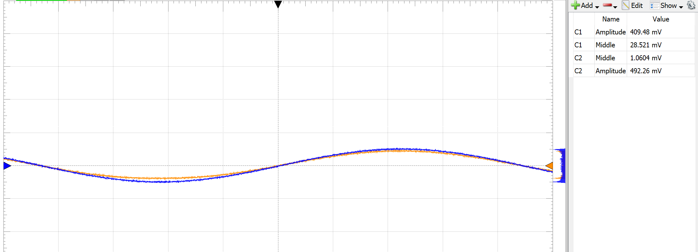
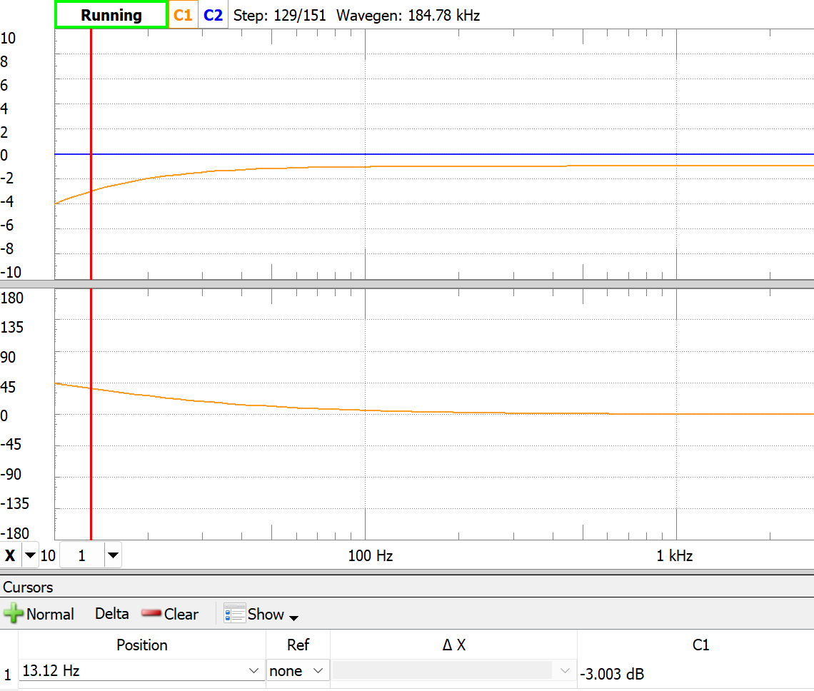

En diskret emitterfølger-buffer
En NPN-emitterfølger bygget rundt en BC547 (den klassiske småsignaltransistoren) for å buffre en 500 mV / 1 kHz sinus mellom en 5,6 kΩ kilde og en 680 Ω last. Halve poenget var å designe bias-punktet, andre halvparten å måle hvor mye virkeligheten avviker fra læreboka.
Designvalgene
- VCC = 7 V, med VE satt til 3,5 V, halvveis opp, slik at signalet får like stort svingrom i begge retninger.
- IE = 1 mA → RE = 3,5 kΩ.
- Basebias fra en spenningsdeler. «Stivhetsfaktoren» k = 3 er bevisst valgt på den myke siden. Kildemotstanden er 5,6 kΩ, så deleren må ikke laste inngangen. Med k = 3: R2 = 280 kΩ, R1 = 140 kΩ.
- 22 µF AC-koblingskondensatorer på inngang og utgang.
Tallene
Beregnet inngangsimpedans: ~52 kΩ, som gir en spenningsdeler på kildesiden på
52k / (5,6k + 52k) ≈ 0,903. Bufferen burde altså gi basen
rundt 90 % av kildeamplituden, og derfra forsterker en emitterfølger
signalet nesten med enhetsforsterkning videre til lasten.
Målt: inngang 492 mV, utgang 410 mV → forhold 0,83. Under målet. Når RE ble justert ned til 1,52 kΩ (som hever IE til ~23 mA, som gir bedre re), kom det opp på 441 mV / 490 mV = 0,90, akkurat det forutsagte forholdet. Nedre knekkfrekvens fra målingen: f−3dB ≈ 13 Hz.



Hva jeg ville gjort annerledes
Stivere spenningsdeler hvis kilden tåler det (5–20× IB i stedet for 3×), for mer uavhengighet av β. Større koblingskondensatorer hvis lavfrekvensresponsen betyr noe. Og dersom presisjon er målet, dropp emitterfølgeren helt og bruk en op-amp med bufret utgang. Den diskrete transistoren var oppgaven, ikke det optimale valget.